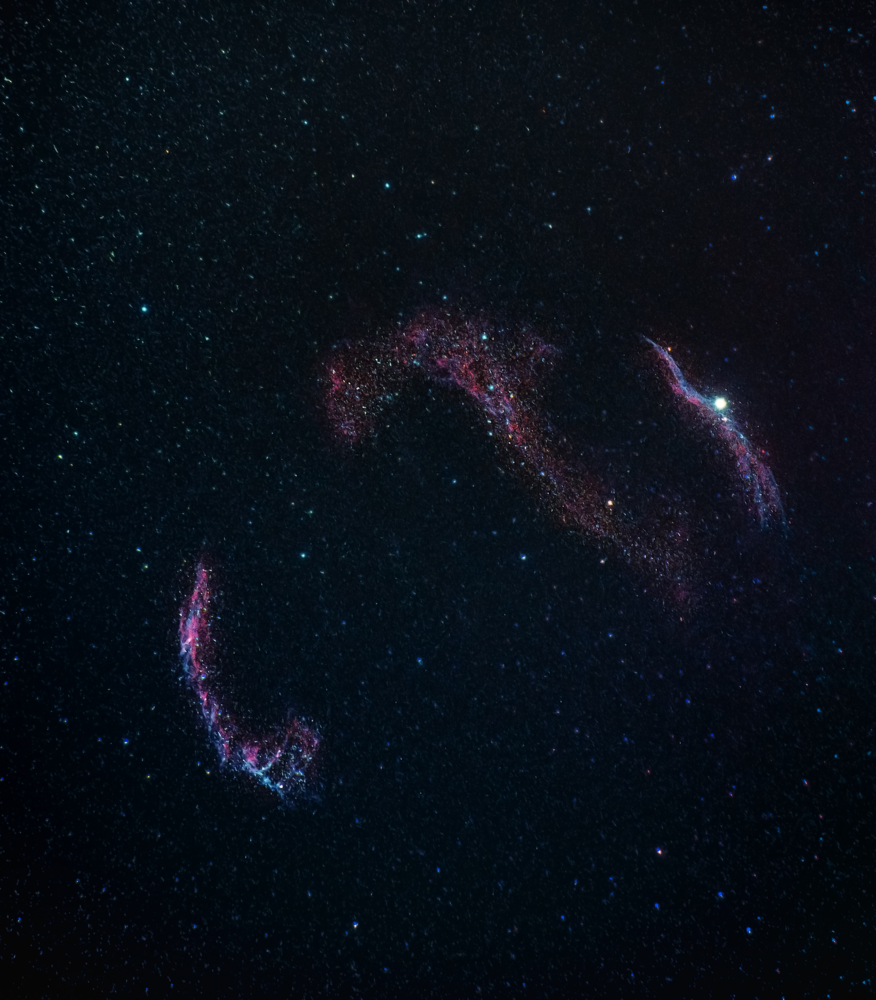

1. Exosome
2. exocobio
3. global
Exosome
엑소좀이란 나노소포체로써 200-500 nm 사이즈의 작은 소포체를 말한다.
Exosomes are membrane-bound extracellular vesicles (EVs) that are produced in the endosomal compartment of most eukaryotic cells.
[1][2][3] The multivesicular body (MVB) is an endosome defined by intraluminal vesicles (ILVs) that bud inward into the endosomal lumen. If the MVB fuses with the cell surface (the plasma membrane), these ILVs are released as exosomes.
In multicellular organisms, exosomes and other EVs were discovered in biological fluids including blood, urine and cerebrospinal fluid. Importantly, exosomes were also identified within the tissue matrix, coined Matrix-Bound Nanovesicles (MBV).[4] They are also released in vitro by cultured cells into their growth medium.[5][6][7] Since the size of exosomes is limited by that of the parent MVB, exosomes are generally thought to be smaller than most other EVs, from about 30 to 150 nanometres

(nm) in diameter: around the same size as many lipoproteins but much smaller than cells.[5]
Compared with EVs in general, it is unclear whether exosomes have unique characteristics or functions or can be separated or distinguished effectively from other EVs.[1] EVs including exosomes carry markers of cells of origin and have specialized functions in physiological processes, from coagulation and intercellular signalling to waste management.[5] Consequently, there is a growing interest in clinical applications of EVs as biomarkers and therapies alike,[8] prompting establishment of an, International Society for Extracellular Vesicles (ISEV) and a scientific journal devoted to EVs, the Journal of Extracellular Vesicles.